만드는 건 싸졌다.
무엇을 만들지 아는가.
YC의 창업 통계와 라이트필드의 운영 사례가 가리키는 변화는 같다. 제품을 만드는 능력의 문턱이 낮아질수록, 문제를 고르는 판단과 일을 끝내는 책임이 더 중요해진다. 그러나 작은 팀의 성공을 모든 조직의 정답으로 읽을 수는 없다.
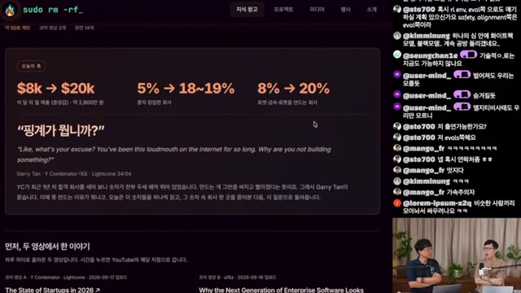
이 보고서는 제공된 영상 분석 노트를 바탕으로 AI 시대의 창업, 제품 가격, 조직 운영을 재구성한다. 전반부는 YC 참가사의 변화에 관한 통계, 후반부는 라이트필드 한 회사의 전환 사례다. 두 자료는 희소한 역량이 구현에서 문제 선택으로 이동한다는 해석을 뒷받침하지만, 그 인과를 입증하지는 않는다. 역할의 유연성과 장기 과제의 오너십을 어떻게 함께 설계할지는 끝내 열린 질문으로 남는다.
읽는 기준 · 수치와 사례는 영상에서 소개된 주장이다. YC·a16z 원본은 직접 대조되지 않았으며, 본문은 관찰·진행자의 해석·편집상 시사점을 구분한다. 근거와 한계 보기 ↗
먼저 읽는 핵심 발견
KEY FINDINGS배치 종료 시 월매출 중앙값
영상이 전한 YC 참가사 지표. 평균이 아닌 중앙값이며, 2.5배의 변화다.
솔로 창업 비중
먼저 혼자 만들고 나중에 공동창업자가 합류하는 패턴도 소개된다.
하드테크 회사 비중
변화는 관찰됐지만, AI와의 인과관계는 진행자도 확정하지 않는다.
문제를 이해하고 목표와 맥락을 전달하는 능력이 AI 활용의 출발점으로 부각된다.
좌석 수는 원가를 설명하지 못하고, 사용량 과금은 고객의 실험을 위축시킬 수 있다.
직무 간 이동을 허용하는 일과, 끝까지 책임질 사람을 정하는 일은 함께 다뤄야 한다.
창업의 병목이
‘구현’에서 ‘선택’으로 옮겨간다
“왜 아직 아무것도 만들지 않는가.” 오프닝의 질문은 강하다. 하지만 이를 읽는 첫 번째 조건은 분명하다. 여기서 제시되는 숫자는 전체 스타트업 시장이 아니라, YC가 선발한 회사들의 변화다.
배치 종료 시 월매출 중앙값이 8천 달러에서 2만 달러로 높아졌다는 대목에서 진행자들은 두 번 선을 긋는다. 아웃라이어의 영향을 크게 받는 평균이 아니라 중앙값이며, 모집단은 YC 배치 참가사라는 것이다. 3개월 만에 100만 달러 매출에 도달한 사례도 소개되지만, 제공된 노트만으로는 해당 매출의 집계 방식까지 확정할 수 없다.
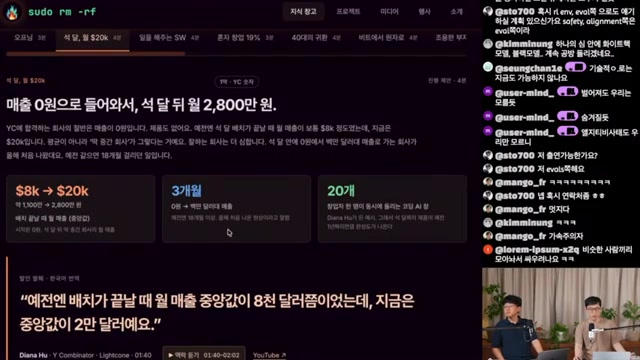
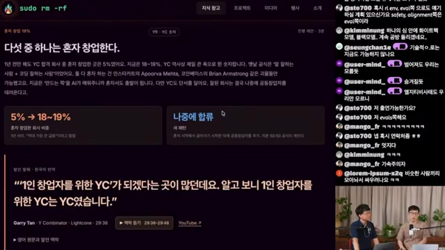
공동창업자의 필요도 다시 묻는다
진행자들은 ‘말 잘하는 사람과 코딩 잘하는 사람’의 조합이 당연했던 시절과 지금을 대비한다. AI가 구현의 일부를 담당하면, 서로 다른 기능을 보완하기 위한 공동창업의 논리가 약해질 수 있다는 해석이다. 먼저 제품을 만든 창업자가 더 많은 지분을 갖는 구조에 관한 논의도 이어진다. 다만 이는 자막에 담긴 해석이며, 지분 관행의 변화를 입증하는 별도 통계는 제시되지 않는다.
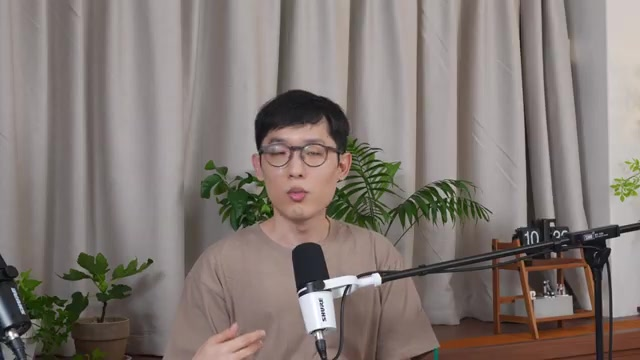
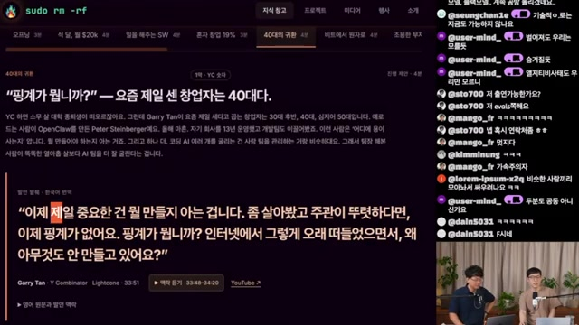
“팀장 해본 사람이 똑똑한 열아홉 살보다 AI 팀을 더 잘 굴린다”는 비유도 같은 맥락이다. 무엇을 시켜야 하는지 알고, 필요한 배경을 전달하고, 결과가 맞는지 판단하는 경험이 중요하다는 뜻이다. 40대가 더 성공한다는 일반 법칙이나 연령별 비교 자료가 제시된 것은 아니다.
하드테크의 증가와 조용히 성장하는 데이터 회사
하드테크 비중은 8%에서 20%, 로봇 회사 비중은 1%에서 6~7%로 늘었다고 소개된다. 박사 학위를 가진 창업자는 여섯 명 중 한 명이다. 금속 공급망 회사 Nox Metals는 전통 제조업에서도 소프트웨어 기업과 같은 성장 속도가 가능하다는 사례로 언급된다.
영상의 논리는 작은 팀도 AI를 이용해 이전보다 많은 일을 처리할 수 있어 초기 인건비의 부담이 줄어든다는 것이다. 그러나 코딩 비용 하락이 왜 하드테크의 증가로 이어지는지는 별개의 질문이다. 진행자도 소프트웨어의 복제 용이성과 하드웨어의 방어력을 가설로 제시한 뒤, 연결을 완전히 설명하지 못했다고 인정한다.
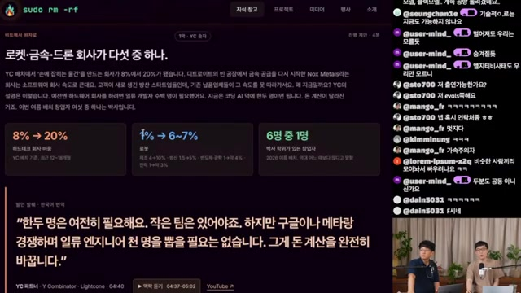
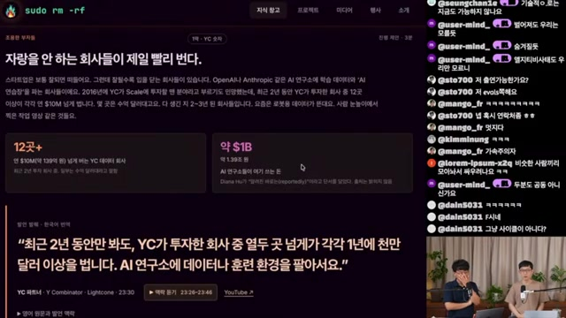
소셜미디어에서 눈에 띄지 않아도 AI 연구소에 데이터와 훈련 환경을 공급하며 큰 매출을 내는 회사가 있다는 대목은, 시장을 보는 시선을 바꾼다. 진행자들은 Scale AI 이후 ‘데이터 벤더’가 독립된 회사군으로 자리 잡았고, 여기에 강화학습 환경 제공사가 더해졌다고 설명한다. 다만 약 10억 달러라는 연구소 지출 수치의 기간과 산정 범위는 노트에서 확인되지 않는다.
2,500만 사용자의 제품을 떠나,
고객의 현실 안으로
영상의 후반부는 통계에서 단일 기업 사례로 전환한다. Keith Peiris와 라이트필드의 이야기는 제품을 다시 만드는 비용이 낮아졌을 때, 창업자가 무엇을 기준으로 방향을 바꾸는지 묻는다.
노트에 따르면 Peiris는 인스타그램·에어비앤비 출신으로, 발표자료 도구 Tome을 만들었다. 누적 사용자 2,500만 명이라는 숫자에도 불구하고 팀 내부에서는 제품에 대한 애착이 부족했다는 발언이 소개된다. 인원을 70명에서 7명으로 줄인 전환도 함께 제시된다.
진행자들은 이 결정을 당연하게 받아들이지 않는다. 외부 사용자가 좋아한다면 내부의 취향이 얼마나 중요한가. 제품을 좋아하지 않는 팀은 결국 사용자도 붙잡지 못하는가. 다른 제품을 만드는 비용이 낮아진 것이 피벗을 더 쉽게 했는가. 영상은 이 질문들로부터 창업자가 그 시장과 문제에 얼마나 깊이 연결되어 있는가를 강조한다.
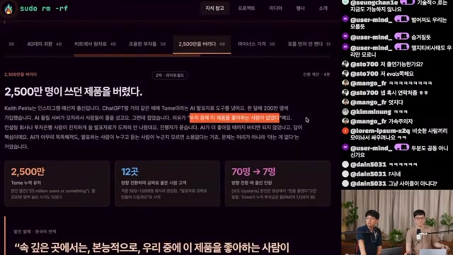
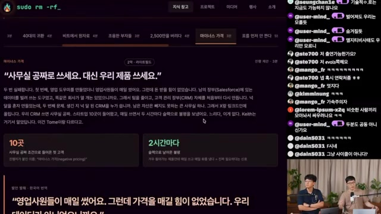
시장과의 연결은 취향을 넘어선다
영상은 제품과 시장의 적합성인 PMF에 더해, 창업자와 시장의 적합성인 ‘파운더 마켓 핏’을 강조한다. 진행자가 자신의 유튜브 채널을 운영하면서 영상 편집 제품을 만드는 경우가 예로 등장한다. 직접 겪는 문제는 고객의 언어와 작업의 맥락을 이해하는 데 도움이 된다는 설명이다.
다만 이 사례가 PMF의 중요성이 사라졌음을 보여주지는 않는다. AI가 모든 도메인 장벽을 없앴다는 표현 역시 진행자의 강한 해석으로 읽어야 한다. 고객의 지불 의사와 지속 사용을 확인해야 한다는 과제는 여전히 남는다.
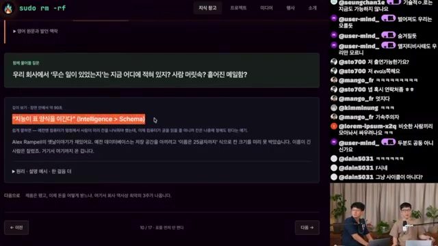
표를 먼저 만들 것인가, 현실을 먼저 모을 것인가
기존 백오피스는 표의 구조를 먼저 정하고 사람이 칸을 채우는 방식이었다. 영상이 소개하는 관점은 순서를 뒤집는다. 이메일, 대화, 고객의 이력처럼 원시 기록을 확보하면 AI가 필요한 구조와 결과물을 만들어낼 수 있다는 것이다. 슬라이드에는 Alex Rampell과 “Intelligence > Schema”라는 표현이 등장한다.
흩어진 맥락을 모은다
목적에 맞게 정리한다
다음 행동을 만든다
사람 수로 받으면 원가가,
사용량으로 받으면 행동이 흔들린다
AI 제품에서는 같은 한 명의 고객도 전혀 다른 비용을 발생시킬 수 있다. 라이트필드의 가격 실험은 원가를 회수하는 일과 고객이 마음껏 써보도록 하는 일이 충돌하는 장면이다.
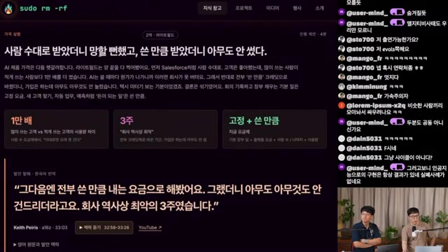
| 과금 방식 | 사례에서 드러난 문제 | 설계 과제 |
|---|---|---|
| 좌석당 과금 | 헤비 유저의 사용량이 원가를 크게 늘린다. | 인원수와 실제 비용의 불일치를 어떻게 보완할 것인가. |
| 순수 사용량 과금 | 매번 비용을 의식해 사용이 위축된다. 창업자는 3주를 “회사 역사상 최악”으로 회고한다. | 고객이 실험 전에 느끼는 비용 불안을 어떻게 줄일 것인가. |
| 고정 + 사용량 | 영상에서 소개된 조합. 장기 성과는 이 노트에 없다. | 예측 가능한 기본료와 추가 사용 비용을 어디에서 나눌 것인가. |
고객 간 사용량 격차가 1만 배에 달한다는 설명은 가격 문제의 중심에 있다. 진행자도 자신의 토큰 사용량을 주변 사람과 비교하며, 사용량의 차이가 곧 산출물 가치의 차이는 아니라고 덧붙인다. 이 개인적 비교는 별도의 측정 자료가 없는 경험담이다.
역할의 벽을 낮춰도,
일을 끝낼 사람은 필요하다
이 회차의 가장 생산적인 충돌은 기술이 아니라 조직에서 나온다. “담당 구역을 없애자”는 주장에 “긴 일은 오너십 없이 끝나지 않는다”는 반론이 맞선다.
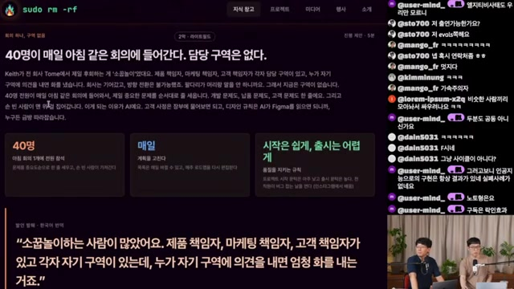
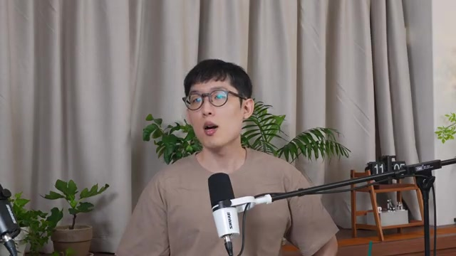
진행자들은 PM이 AI로 디자인 초안을 만들어 디자이너에게 보냈다가 갈등이 생겼다는 온라인 일화를 꺼낸다. 결과물의 품질을 비판하는 것과 직무 경계를 넘었다고 비난하는 것은 다르다는 판단이다. 다만 이 사건은 영상 속 소개이며, 사실관계를 독립적으로 확인한 사례는 아니다.
라이트필드의 운영은 그 반대편에 놓인다. 영상에 따르면 40명이 매일 아침 한 회의에 들어가 할 일을 나열하고 우선순위를 정한 뒤, 남는 사람이 중요한 일을 가져간다. 개발·고객·납품 문제를 직무 이름으로 먼저 나누지 않는다. 슬라이드의 원칙은 “시작은 쉽게, 출시는 어렵게”다.
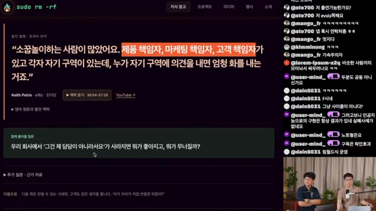
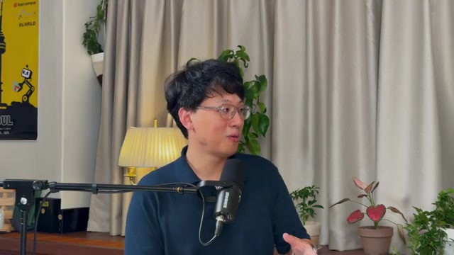
“경계는 다 없어져야 한다”
직무보다 회사에 필요한 일을 먼저 본다. 잘하는 일을 맡고, 더 잘하는 사람이 있으면 위임한다.
“오너십이 있어야 일이 끝난다”
긴 과제에는 맥락과 판단을 이어갈 사람이 필요하다. 그 책임이 결국 하나의 영역이 되지 않는가.
합의는 조건부다. 모든 구성원이 회사의 성공을 자신의 이익으로 여기는 ‘주인’이라면 가능할 수 있다는 것이다. 여기서 주인은 반드시 지분 보유자를 뜻하지 않는다. 다만 500명 규모에서도 성립하는지는 “상상 범위 밖”으로 남긴다.
진행자들은 작은 조직을 유지하거나 사업별로 나누는 방향을 선호하며 토스와 텔레그램을 예로 든다. 노암 브라운의 논지를 빌려 협조적인 AI 에이전트와 대기업의 정렬 문제도 대비한다. 이 역시 영상의 재인용이며, 에이전트의 완전한 협조성이나 기업별 규모를 독립적으로 검증한 근거는 아니다. 두 진행자의 협업 자체가 오랜 친구 관계에 기반한다는 특수성도 인정된다.
역할을 유연하게 만드는 일과
편집상 시사점 · 영상 속 두 입장을 종합한 문장
책임을 분명하게 만드는 일은
함께 설계해야 한다.
작은 고객사가
작은 기회라는 뜻은 아니다
투자금은 2억 달러인데 영업·마케팅 담당은 세 명. 영상이 소개한 고객사 사례는 직원 수로 구매 잠재력을 가늠하던 감각을 흔든다.
진행자들이 끌어낸 영업 전략의 함의는 현재 가장 큰 회사뿐 아니라, 빠르게 성장할 회사를 일찍 고객으로 확보하는 일에 주목하자는 것이다. 적은 인원이 큰 사업을 운영한다면 조직 규모와 구매력 사이의 관계가 달라질 수 있다.
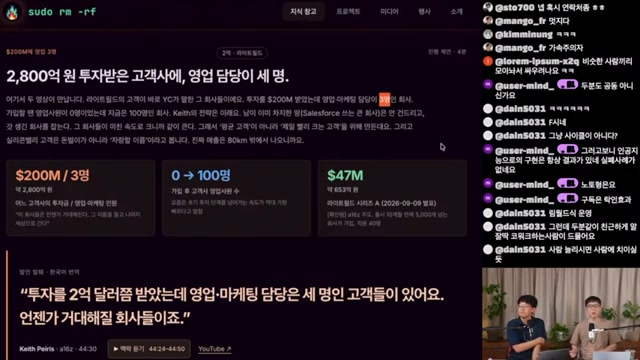
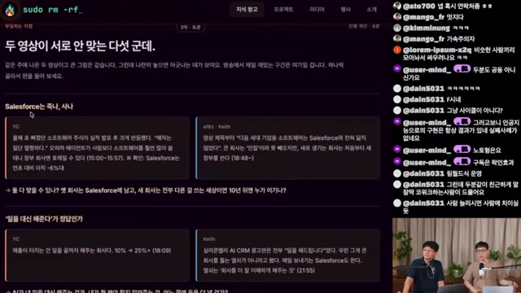
전통 SaaS의 운명은 확정되지 않았다
영상은 YC와 a16z의 이야기가 서로 어긋나는 지점을 별도로 제시한다. Salesforce가 살아남을지에 관한 대화는 결국 특정 기업의 운명보다 전통 SaaS가 변화를 얼마나 잘 수행하느냐의 문제로 재정의된다. 기존 기업의 생존이나 몰락 어느 쪽도 이 자료만으로 결론 내릴 수 없다.
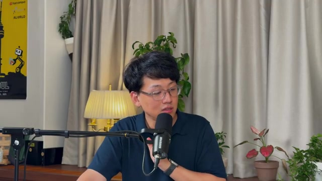
두 진행자는 모델의 발전이 멈추더라도 기존 능력을 실제 업무에 적용할 여지가 크다는 이유로 AI가 과소평가됐다고 본다. “GPU가 부족하니 과투자가 답이었다”는 견해도 덧붙이지만, 이를 뒷받침하는 수급 자료는 이 노트에 없다. 이 부분은 산업 전망에 관한 의견이며, YC 지표와 같은 종류의 통계 근거로 취급해서는 안 된다.
직무 갈등의 이면에는
자신의 자리가 사라질지 모른다는 두려움이 있다
영상의 마지막은 기술 낙관론보다 현실적이다. AI로 다른 직무의 일을 해냈을 때 조직은 그 결과를 반길 것인가. 반드시 그렇지는 않다는 경험담이 시청자 댓글에서 등장한다.
디자이너가 AI로 기능을 구현했지만 개발 조직과 갈등을 겪었다는 댓글을 계기로, 진행자들은 영역 침범에 대한 분노를 위협 반응으로 해석한다. 더 적은 인원으로 일하는 조직이 가능해질수록 자신의 전문성이 어떤 대우를 받을지 불안해질 수 있다는 것이다. 댓글의 개별 사건은 확인되지 않았으므로, 갈등의 빈도나 일반적인 해고 실태를 보여주는 근거는 아니다.
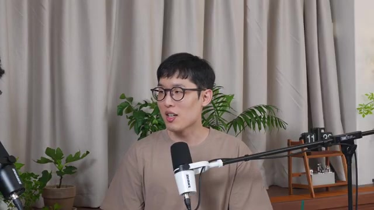
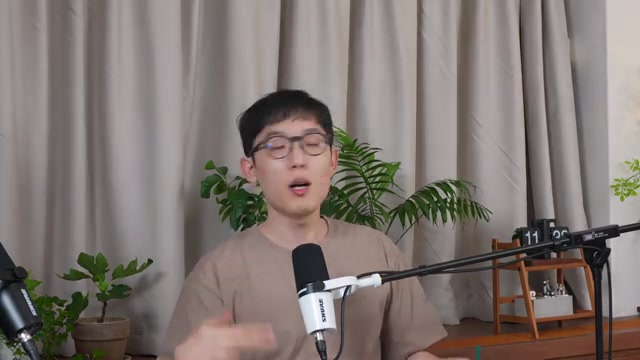
| 대응 | 영상 속 기대 | 인정한 한계 |
|---|---|---|
| 떠나서 만든다 | 조직의 제약을 벗어나 자신의 능력을 쓴다. | 진행자도 ‘도피’일 수 있다고 인정한다. 제품 구현만으로 경쟁에서 이기지는 못한다. |
| 사람을 설득한다 | 갈등을 건설적으로 풀 수 있는 사람이 귀해진다. | 그런 해결 능력을 실제로 보여준 사례를 제시하지 못한다. |
| 의사결정 권한을 갖는다 | 조직의 방향과 일하는 방식을 바꾼다. | 구성원 일반이 쉽게 선택할 수 있는 해법이 아니다. |
한국의 제약이라는 주장, 그리고 남는 설명의 공백
진행자들은 한국과 미국의 해고 용이성 차이가 조직 전환 속도에 영향을 준다고 주장한다. 그러나 이 영상에는 노동법 비교, 고용 관행 자료, 전환 성과에 대한 분석이 없다. 따라서 한국의 고용 제도가 AI 전환을 구조적으로 막는다는 결론은 진행자의 견해로 구분해야 한다.
흥미로운 것은 바로 뒤에 붙는 반론이다. 내부에서 비효율적으로 보이는 기업도 잘 살아남고 있다면, 밖에서는 잘 보이지 않는 강점이 있을 수 있다. 유통, 고객 관계, 신뢰, 운영 능력 가운데 무엇이 그 강점인지는 추가로 살펴야 한다. 제품을 만드는 비용이 낮아진 것과 기업을 대체하는 비용이 낮아진 것은 같은 명제가 아니다.
네 번째 직원은 누구여야 할까
영업·마케팅 세 명이 큰 사업을 운영하는 회사는 다음에 누구를 뽑을까. 영상의 첫 반문은 더 근본적이다. “네 번째 사람을 뽑기는 할까?”
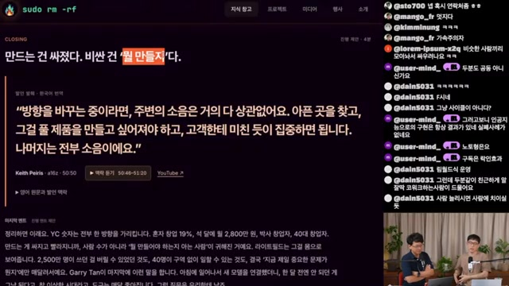
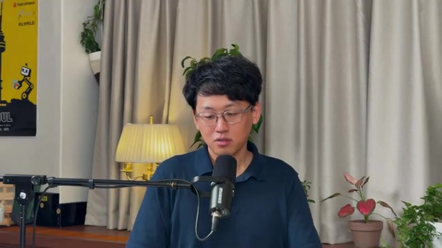
영상은 새로운 채용 기준을 완성하지 않는다. 오히려 전문성 하나에 역할 하나를 대응시키던 방식이 흔들릴 때, 무엇을 평가해야 하는지 아직 모르겠다고 말한다. 이 보고서가 제안할 수 있는 것은 정답보다 검토할 질문이다.
창업자에게
직접 아는 문제인지, 해결하고 싶은 이유가 있는지, 고객이 실제로 돈을 내고 계속 쓰는지 확인하자. 제품에 대한 애착과 시장의 반응은 함께 검토해야 한다.
직장인에게
직무 이름을 넘어 어떤 문제를 맡아 끝낼 수 있는지 설명해 보자. AI를 쓰는 능력에 목표 설정, 결과 검증, 다른 사람과의 조율이 어떻게 연결되는지가 중요해진다.
조직 리더에게
누구나 개선안을 제안할 수 있게 하되, 장기 과제의 책임자와 완료 기준은 분명히 하자. 역할의 유연성이 책임의 공백으로 이어지지 않는지 확인할 필요가 있다.
위 세 항목은 영상의 논의를 바탕으로 정리한 편집상 제안이며, 효과가 검증된 조직 운영 모델을 뜻하지 않는다.
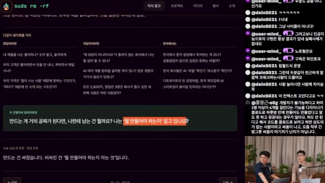
팀에서 바로 꺼내볼 질문
- 우리 제품을 우리는 실제로 좋아하는가. 그 이유는 고객의 문제와 연결되어 있는가.
- 고객은 좋아한다고만 말하는가, 불평하면서도 매일 쓰고 비용을 지불하는가.
- 직무 경계 밖에서 나온 제안을 결과물의 품질로 평가하고 있는가.
- 두 달짜리 과제가 생기면, 마지막까지 책임지는 사람은 누구인가.
- AI 사용량이 크게 늘 때 원가와 고객 가치가 각각 어떻게 변하는가.
- 한국의 투자·채용·조직 관행에 이 사례를 적용하려면 어떤 추가 근거가 필요한가.
숫자는 정의와 함께 읽는다
아래는 영상 분석 노트에 기록된 수치다. 독립적으로 검증된 시장 통계가 아니라 영상 속 주장과 사례를 추적하기 위한 기록이며, 서로 다른 시점과 모집단을 하나의 연속 지표로 합치지 않았다.
| 지표 | 영상에 제시된 값 | 범위·확인할 사항 | 장면 |
|---|---|---|---|
| 배치 종료 월매출 중앙값 | $8k → $20k | YC 참가사. 비교 배치·시점 확인 필요. | 02:30 |
| $1M 매출 도달 사례 | 3개월 | 매출의 집계 기간·기준 확인 필요. | 02:30 |
| 솔로 창업 비중 | 5% → 18~19% | 창업자 수의 기준 시점 확인 필요. | 03:03 |
| 하드테크 회사 비중 | 8% → 20% | 하드테크 분류 기준 확인 필요. | 07:08 |
| 로봇 회사 비중 | 1% → 6~7% | 하드테크와의 포함 관계 확인 필요. | 07:08 |
| 박사 학위 창업자 | 6명 중 1명 | 창업자 기준. 회사 비중과 구분. | 07:08 |
| 연매출 $10M 이상 데이터 회사 | 12곳 이상 | YC 투자사, 최근 2년 관련 발언. | 10:15 |
| AI 연구소 데이터·환경 지출 | 약 $1B | 지출 기간과 산정 범위 미확인. | 10:15 |
| Tome 누적 사용자 | 2,500만 명 | 유료·활성 사용자 수와 구분. | 12:48 |
| 전환 과정의 인원 축소 | 70명 → 7명 | 라이트필드 사례. 세부 시점 미확인. | 12:48 |
| 고객 간 사용량 격차 | 1만 배 | 측정 단위·기간·분포 확인 필요. | 19:03 |
| 사용량 과금 실험 | 3주 | 창업자의 회고. 실험 고객 수 미확인. | 19:03 |
| 전사 아침 회의 | 40명 전원, 매일 | 운영 사례. 과거 인원 축소와 시점 구분. | 26:12 |
| 고객사 투자금 / GTM 인원 | $200M / 3명 | 개별 고객 예시. 투자금은 매출이 아님. | 30:51 |
| 라이트필드 시리즈 A | $47M | 2026-09-09 발표로 소개. 공식 자료 미대조. | 30:51 |
원 노트의 원화 환산은 영상 맥락의 근삿값이다. 환율 기준이 제시되지 않아 이 표는 달러 값을 유지했다. 02:30의 ‘20개’, 17:14의 ‘5분 / 며칠’, 30:51의 ‘0 → 100명’처럼 의미를 충분히 확인하지 못한 카드 숫자는 별도 지표로 해석하지 않았다.
이 보고서가 아는 것과
아직 확인하지 못한 것
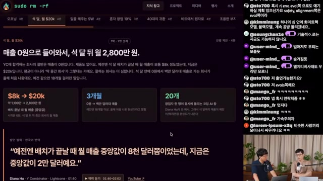
-
직접적인 분석 대상 — sudoremove
「YC 스타트업, AI 시대에 무엇이 바뀌었나」 · 2026-09-22 · 44분 54초.이 HTML은 사용자가 제공한 해당 영상의 분석 노트를 편집한 문서다. 영상 재생이나 자막·프레임의 재검증을 새로 수행한 보고서는 아니다.
-
영상이 재인용한 자료 — Y Combinator / Lightcone
The State of Startups in 2026 · 노트에 기록된 업로드일 2026-09-17.Garry Tan, Diana Hu 등 YC 관계자의 발언과 통계가 한국어로 옮겨졌다. 원본 영상과 수치 정의는 직접 대조되지 않았다.
-
영상이 재인용한 자료 — a16z
Why the Next Generation of Enterprise Software Looks… · 노트에 기록된 업로드일 2026-09-16.제목은 제공된 노트의 축약 표기를 유지했다. Keith Peiris의 제품 전환, 가격, 조직 운영 사례가 중심이다. 원본 링크와 전체 제목은 제공되지 않았다.
자료 수집과 화면 판독
제공된 노트는 한국어 수동 자막 1,357개 큐, 약 19,500자와 YouTube 메타데이터·설명란, 원본 영상에서 추출한 24개 프레임에 근거한다고 기록한다. 장면 전환 검출 임곗값 0.25로 202개 후보를 얻고, 5초 이상 안정 구간 132개로 압축한 뒤 34장을 육안 검토했다.
이어 전체 2,694초를 1초 간격으로 샘플링하고 평균 휘도 70 미만을 기준으로 24개 슬라이드 구간을 탐지했다고 설명한다. 구간별 37장을 재추출하고 컨택트시트 네 장으로 대조해, 스크롤·하이라이트 변형 20장을 제거했다. 최종 자료는 고유 슬라이드 17장과 토론 구간의 진행자 화면 7장이다. 이 문서는 제공된 24개 이미지의 경로를 모두 보존했다.
결론을 제한하는 다섯 가지 조건
- 선발된 표본. YC 참가사의 결과는 전체 창업 시장을 대표하지 않는다. YC 관계자의 발언에는 투자·모집 주체의 관점도 반영된다.
- 단일 기업 사례. 라이트필드와 비슷하게 전환했다가 실패한 기업은 함께 제시되지 않는다. 이 사례만으로 성공 확률을 추정할 수 없다.
- 인과관계 미검증. AI 도입, 매출 성장, 창업자 구성, 하드테크 비중 사이의 연결은 별도로 입증되지 않았다.
- 원 출처 미대조. 한국어 슬라이드는 진행자들의 번역·요약이다. 수치의 분모, 기간, 인용 맥락에는 추가 확인이 필요하다.
- 조직·제도 논의의 한계. 역할 해체의 효과, 연령별 우위, 한국의 고용 제도에 관한 주장은 비교 연구로 뒷받침되지 않았다.
후속 검증 목록
- YC 원본에서 통계별 비교 시점, 정의, 표본과 분모 확인.
- a16z 원본에서 과금 실험의 고객 수, 기간, 사용량 단위와 성과 확인.
- ‘두 출처가 안 맞는 다섯 군데’ 중 판독되지 않은 세 항목 복원.
- 라이트필드의 4,700만 달러 시리즈 A 공식 발표와 인원 변화 시점 대조.
- 같은 채널의 AI 네이티브 컴퍼니 이전 회차와 논지 변화 비교.
- 같은 날의 AI 안전·개발 속도 관련 영상과 편집 관계 확인. 원 노트의 Obsidian 내부 링크는 공개 주소가 없어 제목 언급으로 대체.
더 빨리 만들 수 있다면,
무엇을 끝까지 해결할 것인가.
이 영상이 보여주는 것은 완성된 미래의 조직도가 아니다. 혼자 시작할 가능성은 커지고, 가격의 기준은 흔들리며, 역할의 경계는 다시 협상되고 있다. 그 안에서 무엇이 통하고 어디서 실패하는지는 더 많은 검증이 필요하다.
그래도 남는 질문은 선명하다. 나는 누구의 어떤 문제를 잘 알고 있는가. 그리고 그 문제가 해결됐다고 말할 때까지 책임질 수 있는가. 다음 제품이나 다음 채용을 고민할 때, 먼저 함께 답해볼 질문이다.